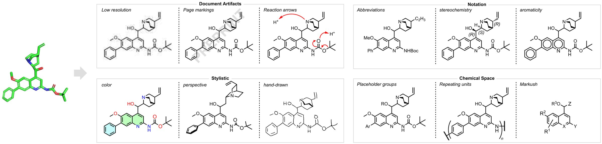
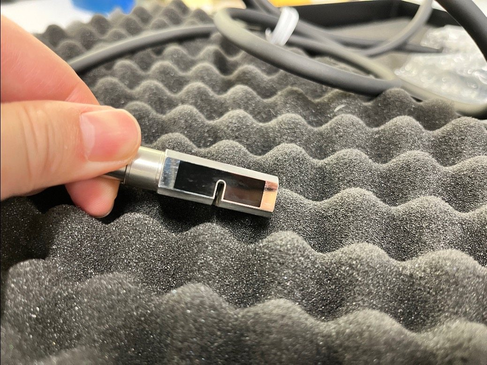
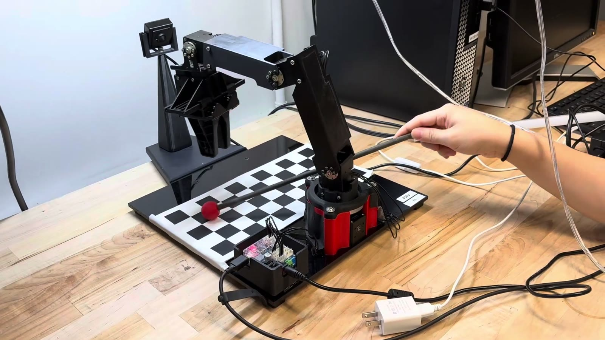
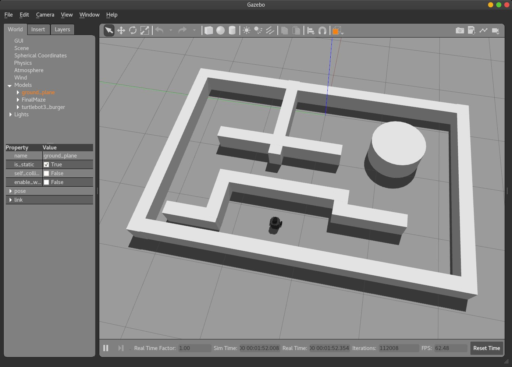

Projects

Heimdall: An Agentic Eye for Chemistry
- Co-first author
- Accepted to the NeurIPS 2026 ML4Molecules workshop
A multi-agent system that reads molecule drawings in papers and patents and turns them into SMILES.

Autonomous Robotic Design for Strategic Adversarial Games
A robot that plays the 2025-26 VEX game, Push Back, with no driver. It sees the field with five cameras and two LiDARs, plans with ROS 2, and picks its moves with a strategy agent trained by self-play.

Custom Variable-Pitch Ultrasound Transducer Beamforming for Needle Guidance
- Working with the WPI Medical FUSION Lab
The JAR526 is a 128-element ultrasound probe with a slit through the middle for a needle, so its elements are not evenly spaced. We wrote a beamformer that uses where the elements really are, compared four ways of forming the image, and built a combined beamformer that makes the needle about four times easier to see.

Giving Shells a New Life: Oyster Waste Solutions in Angsila, Thailand
- Nominated for WPI's President's IQP Award
- Nominated for the Forum on Education Abroad's Award for Academic Achievement Abroad
Seven of us from WPI and Chulalongkorn University worked out how Angsila, a fishing town in Thailand, could turn the oyster shells piling up in its streets into building material.

RBE-3001 Final Project
A 4-joint robot arm with a camera that sorts coloured balls, follows a ball around in real time, and plays tic-tac-toe against a person.

Autonomous Mapping and Localizing Robot
A TurtleBot3 that explores a maze it has never seen, builds a map of it with LiDAR, then uses that map to find where it is and drive to a goal.
Tables4U
A restaurant reservation web app. Diners find a restaurant and book a table; owners manage their tables, hours and bookings.
Recognition
Co-first author, Heimdall: An Agentic Eye for Chemistry.
From the Forum on Education Abroad, for the same project.
Competed with WPI's VEX U team. See the journey.
Experience
Heimdall, the agent tooling around it, and a browser molecule sketcher.
Data work for Admissions and robotics outreach events.
Secretary, marketing chair, build lead, driver and programmer.